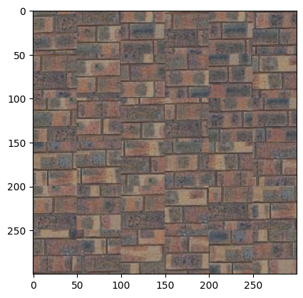
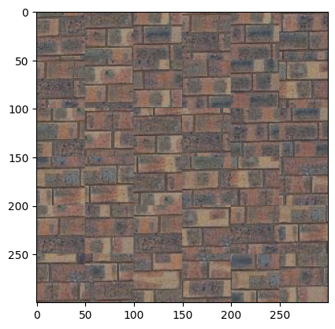
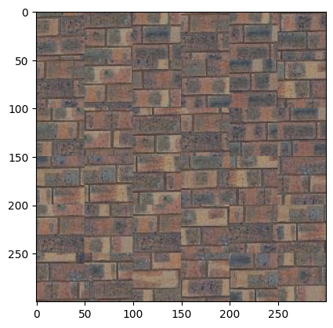

For the first part, the quilt_random function creates a image by randomly sampling square patches from an input/texture image and assembling them in a grid-like fashion. It dynamically calculates the number of patches needed and ensures patches are sampled within valid bounds to avoid out-of-range errors. It also adjusts patch sizes near the edges to fit within the output dimensions. The patch size was chosen to be 50 (high) to replicate the texture of the bricks. The output size was 300. Below is the original image (first) displayed next to the randomly sampled output (second). As you can see, the output is not bad qualitatively, but still requires a smoother overlap.

Moving on, the quilt_simple function improves on the previous method by quilting overlapping patches from the sample image to create a better output. The function works by dividing the output into a grid of patches, aligning them with a specified overlap to ensure smooth transitions between patches. The first patch is selected randomly, and then subsequent patches are chosen based on minimizing the Sum of Squared Differences (SSD) between the overlapping regions of the existing output and candidate patches from the sample image. The 'ssd_patch' helper function computes the SSD for a masked template over all possible patch positions in the sample, and 'choose_sample' selects a random patch among the top 'tolerance' lowest-cost candidates. For this part, the patch size was 53, overlap was 20 and tolerance was 3.

The quilt_cut function creates a texture by quilting overlapping patches from a sample image, using minimum-cost seam cutting to ensure smooth transitions between patches. For each patch, it calculates overlaps with previously placed patches, determines the optimal seam for blending using a mask, and integrates the new patch while minimizing visible seams. The function relies on compute_seam_cost to evaluate the cost of mismatches in overlapping regions, applying the seam mask only within overlap areas.

The texture_transfer function combines texture synthesis with a guidance image to transfer the visual style of a sample image onto the structure of the guidance image. It divides the output into overlapping patches and determines the best-fitting patch for each location based on a weighted combination of overlap consistency (using ssd_patch) and similarity to the corresponding region in the guidance image (using ssd_guidance). The balance between these criteria is controlled by the parameter alpha. The function begins by randomly sampling the first patch and progressively places subsequent patches, aligning them with both the texture sample and the guidance structure.


The iterative_denoise function progressively removes noise from an input image by using UNet. At each timestep, it predicts the noise and variance in the image, estimates a cleaner version using a weighted combination of the image and the noise estimate, and adds controlled variance to maintain the generative process. This iterative process gradually transitions the noisy image to a cleaner, denoised version.

The function generates images by starting with random noise and progressively denoising it using the iterative_denoise function, which leverages the diffusion model to refine the image across multiple timesteps. Each iteration applies the denoising process conditioned on the prompt embedding to generate the final images. The 5 images are shown below, and as you can see, they are not the best quality. The next part aims to improve on that.


The function iterative_denoise_cfg builds on the previous denoising process by incorporating Classifier-Free Guidance (CFG), which improves image generation by adjusting the noise estimate with a weighted combination of conditional and unconditional noise. By using two separate model outputs — one conditioned on the prompt and one unconditional — the function scales the noise difference, giving more control over the generated image's alignment with the prompt.


The process_pil_im function preprocesses and normalizes a PIL image for input into the model. In the translate function, noisy images are generated at specific timesteps and denoised iteratively using Classifier-Free Guidance (CFG), improving image quality by conditioning the denoising process on the input prompt. This results in clearer and more controlled image generation compared to the previous methods. Below are the outputs on 3 different test images.


For this part, the function first adds noise to the input image at specified timesteps, then applies the iterative denoising process using Classifier-Free Guidance (CFG) to refine the image. It calculates noise estimates with both conditioned and unconditioned prompts, applies guidance scaling, and iteratively removes noise until the image reaches the desired clarity. The denoised images are stored for display at different noise levels, showing the progression of the denoising process. The outputs for 2 of the hand drawn iamges and one image from the web are shown below. (Car, Cat and soft-toy)


The inpaint function applies a diffusion-based denoising process to an image, where specific regions defined by a mask are altered with new content while keeping other areas unchanged. It iteratively refines the image, replacing the masked areas with inpainted content, while maintaining the original pixels outside the mask.


The function achieves the transformation of an image by progressively adding and then removing noise at various levels, effectively refining the image to match a specific prompt, such as "a lithograph of a skull." This process demonstrates how a noisy image can be iteratively denoised, with the final output becoming closer to a clear, high-quality version that aligns with the desired artistic or visual style defined by the prompt.


The visual_anagrams function generates visual anagrams by combining two different prompts (images) with adjustable weights. It iteratively denoises a randomly initialized image by applying a diffusion process, where at each timestep, it incorporates elements from both prompts (prompt1 and prompt2) based on their respective weights. The function merges features from the two prompts, allowing for a blended representation in a single image when flipped upside down. The results are shown below.
The make_hybrids function creates a hybrid image by blending features from two prompts (e.g., "a fish" and "a submarine") during the diffusion process. It uses a combination of lowpass and highpass filters on the noise estimates from both prompts, allowing for smooth integration of one prompt's features and sharp details from the other, then iterates through the diffusion steps to refine the hybrid image. The result is a fusion of both images that captures elements from both prompts based on their respective features. Some examples that I have included here are (Skull and Waterfall), (Rocket and Pencil) and (Fish and Submarine)
The UNet features an encoder-decoder structure: the encoder captures hierarchical features by progressively downsampling the input, while the decoder upsamples and reconstructs the output. Skip connections between the encoder and decoder retain critical spatial details, ensuring high-quality results. The bottleneck acts as a compact feature representation hub, and additional convolutional layers deepen the network to learn intricate patterns. This design allows the model to effectively remove noise while preserving the original structure of the image.
The visualize_noising_process function demonstrates how noise impacts images from a dataset, specifically adding Gaussian noise at varying levels (controlled by the parameter ùúé). For each image, noise is added by sampling from a normal distribution and combining it with the original pixel values. The output is shown below.
The train_denoiser function trains a denoising model using an Unconditional U-Net architecture to remove Gaussian noise from images. It accepts parameters such as sigma (noise standard deviation), batch_size (number of images per training batch), learning_rate (optimizer step size), D (number of hidden units in the model), and epochs (total training iterations). The function visualizes denoising results at specific epochs and saves the trained model for future use. The training loss curve is also attached below.


This part involves the UNet denoising images at different noise levels. As seen below, the denoised images get more and more blurry as the noise level increases. After the noise increses beyond 0.8, the denoised images starts losing its shape and is less decipherable.
This code implements a time-conditional UNet architecture for Denoising Diffusion Probabilistic Models (DDPMs), which iteratively adds and removes noise to generate data such as images. The model uses a time-conditional module to incorporate temporal information into the UNet, enabling it to predict noise and reverse the diffusion process. The functions handle forward diffusion (training) and reverse diffusion (sampling) based on a schedule of noise parameters.
For this part, we train a time-conditional UNet on the MNIST dataset for denoising diffusion probabilistic modeling (DDPM). The train_diffusion_unet function implements the forward diffusion process, optimizing the UNet to predict noise added to images across timesteps, while sample_from_model performs reverse diffusion to generate samples from pure noise. The model demonstrates the capability to generate realistic images by reversing the learned diffusion process.
The sampling process starts with pure noise and iteratively denoises it using the trained UNet, reversing the diffusion process across timesteps. At each step, the model predicts noise components, which are subtracted to refine the image, ultimately generating realistic samples from the learned data distribution. The training loss curves and the samples are shown below

The ClassConditionalUNet extends the standard UNet by incorporating both time and class conditioning to improve control over image generation. It uses fully connected blocks (FCBlocks) to process time and one-hot encoded class vectors, which modulate the network's intermediate layers through learned scaling and shifting. A dropout mechanism occasionally removes class conditioning for flexibility, enabling both conditional and unconditional generation.
The train_ddpm function trains a class-conditional UNet-based diffusion model (DDPM) on the MNIST dataset, using both time and class conditioning to predict noise added during the forward diffusion process. The training loop optimizes the model to minimize noise prediction loss over a predefined number of epochs, with periodic milestones for visualizing generated samples conditioned on specific digit classes. Sampling from the trained model leverages the reverse diffusion process to iteratively generate images from pure noise, guided by the target class labels.
This project was challenging in many ways, but the part that took the most time was the training of both the nets. After writing the architecture, I struggled with mantaining datatype consistency throughout. Moreover, for the first part, generating the hybrid images and finding pairs of objects that work was challenging but fun. I have taken some inspiration from ChatGPT and pretrained LLM's to create the structure for some parts of the website.
Back to Main Page